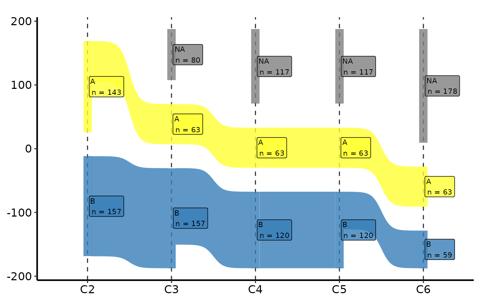

Draws a Sankey diagram showing how patients flow between labelled clusters as the number of clusters K increases. Each column represents one value of K; each band shows the fraction of patients whose cluster assignment changes between K and K+1. Node labels show the cluster letter and patient count.
Usage
cluster_sankey_plot(
data,
cluster_cols = paste0("C", 2:9),
node_levels = NULL,
node_colours = NULL,
alpha = 0.8,
label_size = 8,
label_hjust = -0.05
)Arguments
- data
Data frame; one row per patient. Must contain all columns named in
cluster_cols.- cluster_cols
Character vector of column names giving the cluster assignments at each value of K, in ascending K order. Default
paste0("C", 2:9)(columnsC2,C3, …,C9).- node_levels
Character vector giving the display order of node labels (bottom to top within each column). If
NULL(default), the existing factor levels of the first cluster column are used; if that column is not a factor, levels are taken in order of first appearance.- node_colours
Named character vector mapping node labels to fill colours. If
NULL(default), colours are drawn fromRColorBrewer::brewer.pal(9, "Set1")in the orderc(2, 6, 8, 4, 3, 5, 7, 1, 9)matching the original analysis. Truncated or extended automatically to the number of unique nodes.- alpha
Transparency applied to flow bands and node labels. Default
0.8.- label_size
Font size for node labels in points. Default
8.- label_hjust
Horizontal justification offset for node labels. Negative values shift labels to the right of the node centre. Default
-0.05.
Value
A ggplot2::ggplot() object using ggsankey geoms. Compose with
scale_fill_manual(), labs(), theme(), and hvti_theme().
Details
This ports the PAM cluster stability figure produced by the HVTI clustering
analysis pipeline (source code using ggsankey::make_long(),
geom_sankey(), and geom_sankey_label()).
Requires the ggsankey package. Install with:
remotes::install_github("davidsjoberg/ggsankey")Examples
dta <- sample_cluster_sankey_data(n = 300, seed = 42)
head(dta)
#> C2 C3 C4 C5 C6 C7 C8 C9
#> 1 B B B B F F H H
#> 2 B B B B F F H H
#> 3 A A A A A A A A
#> 4 A A A A A G G G
#> 5 B B D D D D D D
#> 6 B B B B F F F F
table(dta$C9)
#>
#> B F H D I C E G A
#> 59 39 22 26 11 42 38 22 41
# cluster_sankey_plot() requires ggsankey (GitHub-only package).
# Install with: remotes::install_github("davidsjoberg/ggsankey")
if (requireNamespace("ggsankey", quietly = TRUE)) {
# --- Default colours (Set1 palette) -----------------------------------
cluster_sankey_plot(dta) +
ggplot2::labs(x = NULL, title = "Cluster Stability: K = 2 to 9") +
hvti_theme("manuscript")
# --- Custom colour palette --------------------------------------------
my_cols <- c(
A = "#1f77b4", B = "#ff7f0e", C = "#2ca02c", D = "#d62728",
E = "#9467bd", F = "#8c564b", G = "#e377c2", H = "#7f7f7f",
I = "#bcbd22"
)
cluster_sankey_plot(dta, node_colours = my_cols) +
ggplot2::labs(x = NULL) +
hvti_theme("manuscript")
# --- Subset to K = 2 to 6 only ----------------------------------------
cluster_sankey_plot(dta, cluster_cols = paste0("C", 2:6)) +
ggplot2::labs(x = NULL) +
hvti_theme("manuscript")
}
#> Warning: The `size` argument of `element_rect()` is deprecated as of ggplot2 3.4.0.
#> ℹ Please use the `linewidth` argument instead.
#> ℹ The deprecated feature was likely used in the ggsankey package.
#> Please report the issue at <https://github.com/davidsjoberg/ggsankey/issues>.
